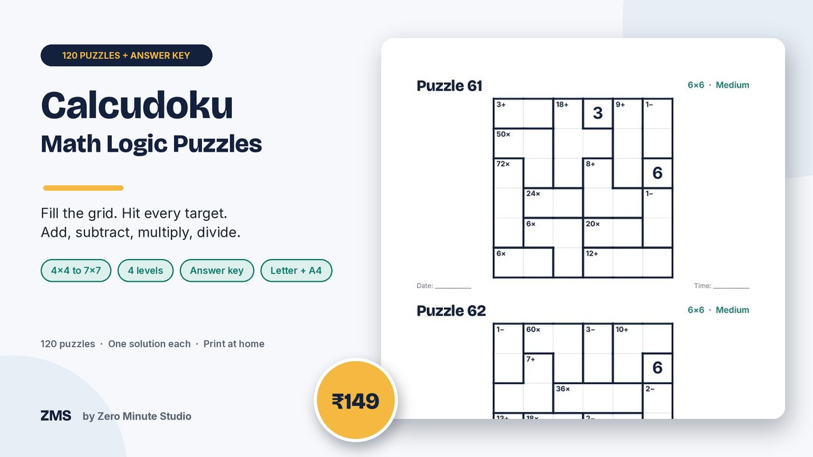
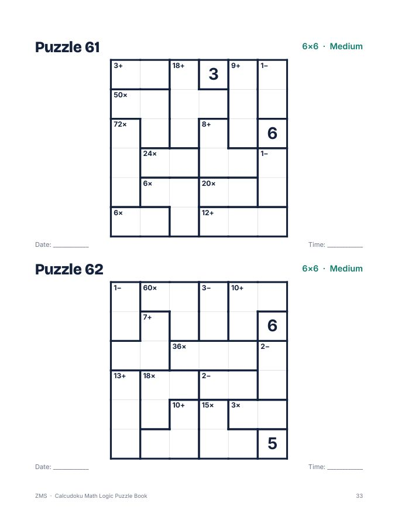
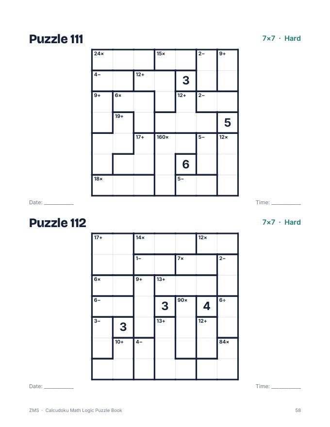
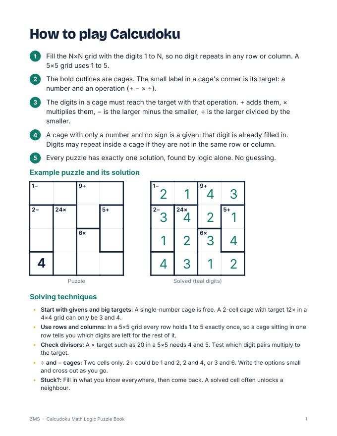
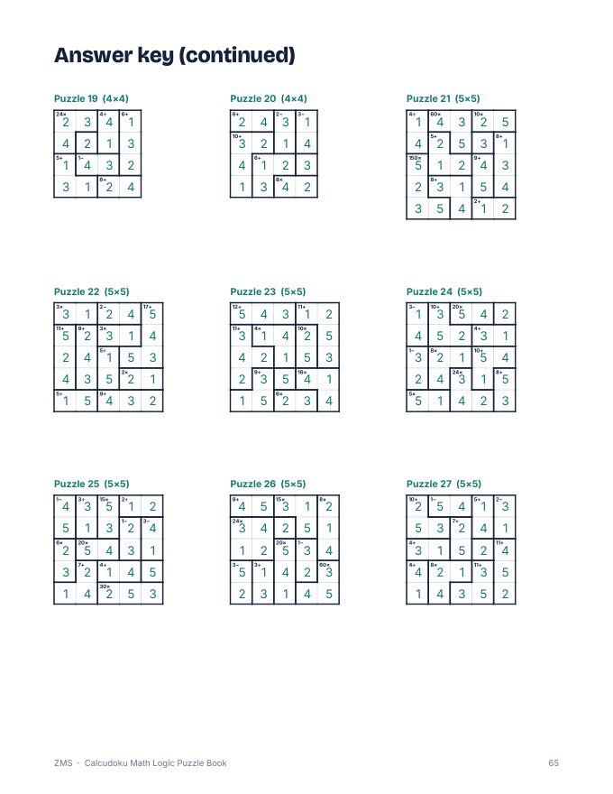

Calcudoku Math Logic Puzzle Book: 120 Puzzles

Calcudoku mixes sudoku-style logic with arithmetic. Fill each grid with the digits 1 to N, never repeating a digit in a row or column, and make every bold cage hit its target with +, −, × or ÷. This book gives you 120 puzzles from easy 4x4 grids up to hard 7x7 grids, a how-to page with solving tips, and a full answer key. Every puzzle was verified by two separate solvers to have exactly one solution.
- 120 puzzles: 20 Beginner 4x4, 30 Easy 5x5, 35 Medium 6x6, 35 Hard 7x7
- Two large grids per page with a date and time line
- How-to-play page with a worked example and solving tips
- Progress tracker to tick off each puzzle
- Full answer key for all 120 grids
- Two print-ready PDFs: US Letter and A4
Preview




FAQ
How does it work? Put 1 to N in every row and column once, and make each bold cage reach its target number with its operation.
Is there an answer key? Yes, all 120 solutions are at the back.
How do I get it? Instantly after payment: a US Letter PDF, an A4 PDF and a short README. Print at home.
We don't do refund & return ✌️